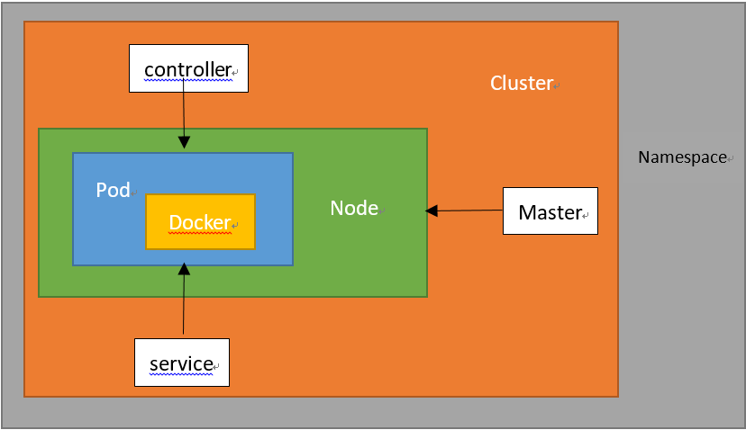

结合docker对应

Cluster
计算、存储和网络资源得集合，k8s利用这些资源运行各种基于容器得应用
Master
Cluster的大脑，它的主要职责是调度，即决定将应用放到哪里运行。Master运行Linux系统，可以是物理或虚拟机。为了实现高可用，可以运行多个Master。
Node
Node职责是运行容器应用。Node由Master管理，Node负责监控并汇报容器状态。同时根据Master要求管理容器的生命周期。
Pod
k8s的最小工作单元，每个Pod包含一个或多个容器。Pod中的容器会作为一个整体被Master调度到一个Node上运行。
引入目的
1.可管理性：有些容器天生就需要紧密联系，一起工作
2.通信和资源共享：Pod中所有容器使用同一个namespace，即相同的IP和port。容器可以共享存储，当k8s挂载volume到Pod,本质是将volume挂载到Pod的每个容器上。
两种使用方式
1.运行单一容器：one-container-per-Pod是最常见模型，将单个容器封装成Pod，k8s管理的也只是Pod而不是容器。
2.运行多个容器
Controller(运行Pod)
K8s通常不会直接创建Pod，而是通过Controller来管理Pod。Controller中定义了Pod的部署特性，比如几个副本、在什么Node上运行等。
K8s提供的Controller主要有Deployment、ReplicaSet、DaemonSet、StatefuleSet、Job等
Deployment：可以管理Pod的多个副本，并确保Pod按照期望状态运行
ReplicaSet：实现Pod的多副本管理。使用Deployment会自动创建ReplicaSet，即Deployment借助ReplicaSet来实现Pod的多副本管理，通常不需要直接使用
DaemonSet：通常运行daemon，用于每个Node最多只运行一个Pod副本的场景
StatefuleSet：保证Pod的每个副本在整个生命周期中名称是不变的。
当某个Pod出故障删除重启时，名称会发生变化，同时StatefuleSet会保证副本按照固定顺序启动、更细或删除Job：用于运行结束或删除的应用。其他Controller中的Pod通常是长期持续运行。
Service（访问Pod）
定义了外界访问一组特定Pod的方式。拥有自己的IP和端口，为Pod提供负载均衡。
Namespace
可以将一个物理的Cluster逻辑上划分成多个虚拟Cluster，每个Cluster就是一个Namespace。不同Namespace的资源完全隔离。
K8s默认创建两个Namespace
default：创建资源时如果不指定，将被放到这个里面
kube-system：K8S自己创建的系统资源将放到这里。